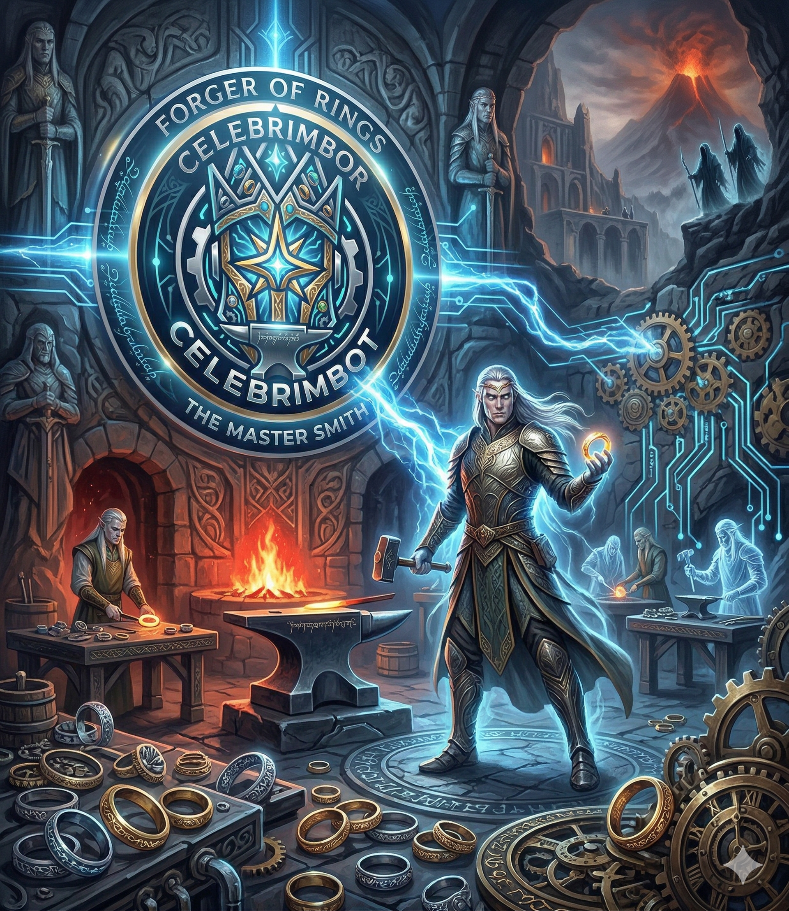

What is Celebrimbot?
Celebrimbot is an IntelliJ Platform plugin that brings a full multi-agent AI system into your IDE. It can read your project files, write and modify code, execute terminal commands, search the web, inspect git history, and hold natural conversations — all from a single chat panel anchored to your IDE window.
Unlike simple autocomplete tools, Celebrimbot operates as an agentic loop: it routes requests intelligently, executes tasks locally when possible, escalates to cloud planning only when needed, and retries failures automatically — without ever leaving your editor.

How It Works
Celebrimbot uses a six-layer architecture — each layer named after a character from Tolkien's legendarium:
The Fellowship
| Character | Role | Default Provider |
|---|---|---|
| 🧙 Gandalf | Router: CHAT / EASY_TASK / COMPLEX_TASK | Local Qwen |
| 🧝 Galadriel | Conversational AI, addresses user as "Mellow" | Local Qwen |
| ⚔️ Aragorn | Easy-task planner | Local Qwen |
| 📜 Elrond | Complex pre-planner, enriches context | Local Qwen |
| 💎 Celebrimbor | Master planner, produces atomic tasks | Alibaba → Gemini → Local |
| 🌿 Samwise | Mechanical worker (delete, terminal, git) | Local Qwen |
| 🍃 Frodo | Code worker (write_code) | Local Qwen → Alibaba |
| 🏹 Legolas & Gimli | Expert worker duo for complex tasks | Alibaba → Gemini → Local |
| 🌳 Treebeard | Ent Reviewer, up to 2 reflection cycles | Alibaba → Local |
| 📖 Bilbo | Session chronicler | Local Qwen |
Key Features
🖥️ Offline-first
Embedded Qwen 2.5 Coder 1.5B runs entirely on your machine via java-llama.cpp. No internet required for most operations. The model (~1.2 GB) is downloaded automatically on first use.
☁️ Multi-provider fallback
Each Fellowship character has its own configurable provider chain: Local Qwen → Alibaba Cloud (Qwen Plus) → Google Gemini → Amazon Q Developer → Kiro (AWS) → External CLI. If one fails, the next kicks in automatically.
🔌 External CLI Delegation
Any Fellowship character can delegate its work to an external AI agent CLI (Kiro, Junie, Aider, etc.). Output is streamed back into the chat panel in real-time. Configure via Settings with {{MESSAGE}} placeholder support.
⚙️ Task Mode Toggles & Custom Prompts
Enable/disable EASY_TASK and COMPLEX_TASK independently. When both are off, Gandalf is bypassed and all messages go directly to Galadriel (chat-only mode). Every character's system prompt is editable in Settings.
🔧 Autonomous code editing
Reads files, applies changes directly in the editor via PSI/VFS. Creates, edits, and deletes files via natural language. Runs shell commands from within the IDE.
🏛️ Council's Review (Validation Loop)
After every write_code, the build command runs automatically. Up to 3 self-correction cycles with error feedback before escalating to a stronger model.
🌿 Treebeard (Ent Reviewer)
A critic agent between Workers and Bilbo. Reviews completed work against the original request and triggers up to 2 re-planning cycles if the result is incomplete. Never hasty, never satisfied with placeholder code.
🔮 Elrond's Palantír (BM25 Index)
Lightweight local semantic index. COMPLEX_TASK planning retrieves the top-8 relevant files instead of sending the full project skeleton to the planner.
🕯️ MCP Bridge (Beacons of Gondor)
MCP-compliant JSON-RPC 2.0 server over HTTP (POST /mcp) and Stdio (celebrimbot mcp-stdio) for Claude Desktop and other MCP hosts.
↩️ Shadow Log (Auto-Undo)
Every file is backed up before being written or deleted. celebrimbot undo restores the last session from .celebrimbot/shadow_log/.
AI Providers
All six providers are selectable per-character in Settings → Celebrimbot → Fellowship AI Configuration.
| Provider | Auth | Internet |
|---|---|---|
| 🖥️ Local (embedded Qwen) | None | ❌ Fully offline |
| 🟠 Alibaba Qwen Cloud | API key | ✅ |
| 🔵 Google Gemini | API key | ✅ |
| 🟡 Amazon Q Developer | SSO token from ~/.aws/sso/cache/ | ✅ |
| 🟢 Kiro (AWS) | SSO token from ~/.aws/sso/cache/kiro-auth-token.json | ✅ |
| 🔧 External CLI | CLI-dependent | CLI-dependent |
Provider Benchmark
Evaluated across 12 provider configurations and 8 test cases using Claude Sonnet 4.6 (via Amazon Q Developer) as the judge.
| Rank | Configuration | Avg Score | Pass Rate |
|---|---|---|---|
| 🥇 | Claude Sonnet 4.6 planners + Qwen 2.5 Coder 7B workers | 9.0/10 | 100% |
| 🥈 | Claude Sonnet 4.6 planners + Phi-3.5 Mini workers | 9.0/10 | 100% |
| 🥉 | Claude Sonnet 4.6 planners + Llama 3.1 8B workers | 8.9/10 | 100% |
| #4 | All Claude Sonnet 4.6 (baseline) | 8.6/10 | 87.5% |
| #7 | All Local — Qwen 2.5 Coder 7B | 7.8/10 | 87.5% |
| #11 | All Local — Qwen 2.5 Coder 1.5B | 4.9/10 | 37.5% |
Key finding: Claude Sonnet 4.6 for planners + a 7B+ local model for workers outperforms using Claude for everything (9.0 vs 8.6) while minimising cloud API calls.
Installation
From JetBrains Marketplace:
Settings → Plugins → Marketplace → search Celebrimbot → Install
Requirements: IntelliJ IDEA 2025.2+ · Java 21+ · ~1.2 GB disk for local model